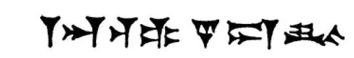

18
A City of Wonders and Wickedness
奇迹和邪恶并存的城市

THE king of Babylon had beaten Nineveh. But he didn't stop with that. He wanted his Babylon to be as great as Nineveh had been. He went on conquering other lands to the left and right until Babylon, in its turn, became the leader and ruler of other countries. Was Babylon, also, in its turn, to fall, as Nineveh had fallen?
When at last the king of Babylon died, he left his vast empire to his son. Now, the king's son was not called John or James or Charles or anything simple like that. It was—Nebuchadnezzar, and I wonder if his father called him by that long name or shortened it to a nickname like Neb , for instance, or Chad , or perhaps Nezzar . This is the way Nebuchadnezzar wrote his name, for he used cuneiform writing. How would you like to write your name in such an unusual way?

Name of Nebuchadnezzar in cuneiform writing
用象形文字书写的尼布甲尼撒的名字
Nebuchadnezzar set to work and made the city of Babylon the largest, the most magnificent, and the most wonderful city in the world. He made the city in the shape of a square and surrounded it with a wall fifty times as high as a man—fifty times—whew!—and so broad that a chariot could be driven along the top, and in this wall he made one hundred huge brass gates. The Euphrates River flowed under the wall, across the city, and out under the wall at the other side.
Nebuchadnezzar could not find anyone in Babylon who was beautiful to be his queen. The Babylonian women must have felt pretty bad—or mad—about that. He went to Media, the country that had helped his father conquer Nineveh. There he found a lovely princess, and so he married her and brought her home to Babylon.
Now, Media was a land of hills and mountains, whilst Babylon was on level ground and without even a hill in sight. Nebuchadnezzar's queen found Babylonia so flat and uninteresting that she became homesick, and she longed for her own country with its wild mountain scenery. Just to please her and keep her contented, Nebuchadnezzar set to work and built a hill for her, but the strange thing was he built it on top of the roof of his palace! On the sides of this hill he made beautiful gardens, and these gardens he planted not only with flowers but also with trees, so that his queen might sit in the shade and enjoy herself. These were called Hanging Gardens. The Hanging Gardens and the tremendous walls were known far and wide as one of the Seven Wonders of the World.
Would you like to know what the other Wonders were?
Well, the pyramids in Egypt were one; the magnificent statue of Zeus at Olympia, where the Olympic Games were held, was another—so those two plus the Hanging Gardens make three.
Nebuchadnezzar believed in many gods, like the ones the Phoenicians worshiped. The Jews away off in Jerusalem believed in one God. Nebuchadnezzar wanted the Jews to worship his gods, but they would not. He also wanted them to pay him taxes, and they would not. So he sent his armies to Jerusalem, destroyed the city, burnt the beautiful Temple that Solomon had built, and brought the Jews and all their belongings to Babylon. There in Babylon Nebuchadnezzar kept the Jews prisoners, and there in Babylon the Jews remained prisoners for fifty years.
Babylon had become not only the most magnificent city in the world; it had become also the most wicked. The people of Babylon gave themselves up to the wildest pleasures. Their only thought seemed to be, “Let's eat, drink, and be merry”; they thought nothing of the morrow; the more wicked the pleasure the more they liked it.
But although Nebuchadnezzar seemed able to do and able to have everything in the world he wanted, he finally went crazy. He thought he was a bull, and he used to get down on his hands and knees and eat grass, imagining he was a beast of the field.
And Babylon, in spite of its tremendous walls and brass gates, was doomed. Babylon was to be conquered. It didn't seem possible. How could it be conquered, and who was to do the conquering? You would probably never guess.
【中文阅读】
巴比伦国王击败了尼尼微，但是他并没有就此停止。他希望他的巴比伦能像曾经的尼尼微那样强大。他继续征服左右临近的国家，直到巴比伦城继尼尼微成为其他国家的领导者和统治者。那么，巴比伦也会像尼尼微那样最终衰亡吗？
在这位巴比伦国王死后，他把庞大的王国留给了自己的儿子。当时，这位国王的儿子不是叫约翰、詹姆斯、查尔斯等等这么简单的名字。他的名字叫——尼布甲尼撒，我不知道他父亲喊他是用这么长的全名，还是用简称，像“尼布”、“查德”或“尼撒”那样的昵称。下面是尼布甲尼撒书写自己名字的字形（参见第89页图），他使用的是楔形文字。你喜欢用这种独特的方式书写自己的名字吗？
尼布甲尼撒继位后大展宏图，他把巴比伦建成了当时世界上最大、最宏伟、最奇妙的城市。他将城市建成四方形，四面环墙，墙高足有人身高的五十倍——五十倍——嚄！城墙也很宽，可以容下战车在上面行驶。在城墙上他还建了一百扇黄铜大门。幼发拉底河在城墙下流入，穿过整个城市，再从另一边城墙下流出。
尼布甲尼撒觉得巴比伦的女人都不够美，不能做自己的王后。巴比伦的女人们对此肯定感到难过——甚至——气得发疯。他去了米堤亚王国，这个国家曾帮助他父亲征服了尼尼微。在那儿他找到了一位可爱的公主，于是娶她为妻，并把她带回了巴比伦。
当时，米堤亚是个群山之国，而巴比伦却建在平地上，国内甚至连一座小山也看不到。尼布甲尼撒的王后发现巴比伦太平坦了，感到很无趣，所以得了思乡病，向往自己家乡那山峦起伏的天然景色。为了取悦她，使她甘愿留在巴比伦，尼布甲尼撒用尽心思为她“造了”一座“小山”，但是奇怪的是他把这座小山建在自己王宫的屋顶上！山坡上他还建了一些美丽的花园，花园里不仅栽花还种树，这样他的王后就可以坐在树荫下享受美景了。这些花园叫做“空中花园”。空中花园和巨大的城墙作为世界七大奇迹之一而远近闻名。
你想知道其他几大奇迹是什么吗？
让我告诉你吧，埃及的金字塔是一个，矗立在奥林匹亚的宏伟的宙斯神像是另一个，奥林匹亚就是举办奥林匹克运动会的地方——因此，这两个奇迹再加上空中花园就是三个了。
尼布甲尼撒和腓尼基人一样信奉多神教，而远在耶路撒冷的犹太人只信仰一个上帝。尼布甲尼撒希望犹太人能信奉他们的多神教，但是犹太人不愿意。他还想要他们向他缴税，但是他们也不愿意。因此，他派军攻打耶路撒冷，毁灭了这座城市，烧毁了所罗门修建的华美的圣殿，将犹太人和他们所有的财产都带回了巴比伦。尼布甲尼撒将犹太人囚禁在巴比伦，而且这一囚禁就是五十年。
巴比伦不仅成为世界上最宏伟的城市，也成了最邪恶的地方。巴比伦城的居民们纵情享受，生活放荡。他们似乎只想着“让我们尽量吃好、喝好、享受吧”；他们从不为明天打算；生活越堕落，他们越开心。
尽管尼布甲尼撒好像能够为所欲为、想要什么就能得到什么，但是，最后他却疯掉了。他认为自己是头公牛，总是四肢着地，啃青草吃，幻想自己就是地上的一头野兽。
尽管有着巨大的城墙和黄铜做的城门，巴比伦还是灭亡了。巴比伦注定要被攻占。这一点似乎不可能。它怎么会被攻占呢？又是谁来攻占它呢？你可能永远也猜不到。